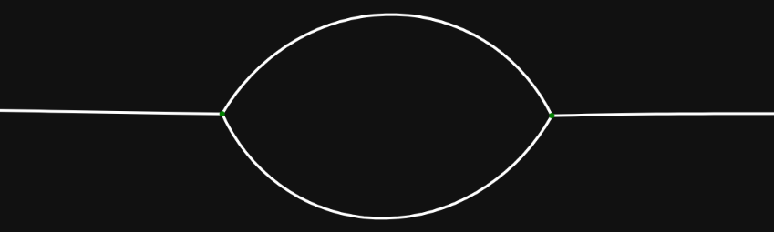
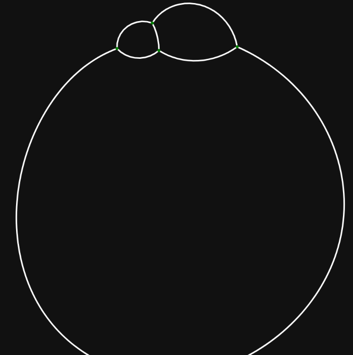
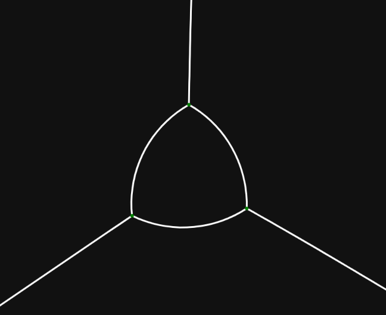
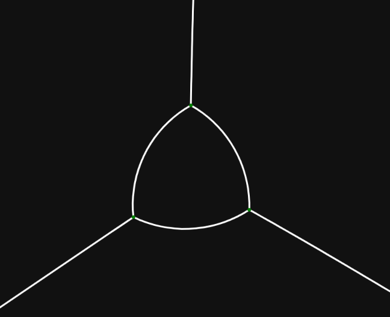

infinite
isoperimetric
partitions
[E. Paolini: Università di Pisa]
Trento ‐ Jan 28, 2023
Plan
-
infinite isoperimetric clusters
[Novaga - P. - Stepanov - Tortorelli]
-
locally isoperimetric partitions
[Novaga - P. - Tortorelli]
-
periodic isoperimetric tilings
[Nobili - Novaga - P.]
Part 1.
infinite isoperimetric clusters
minimize $\displaystyle P(E)= \frac 1 2 \sum_{k=0}^{+\infty} P(E_k)$
with fixed $\lvert E_k \rvert$, $\displaystyle\sum_{k=1}^{+\infty} \lvert E_k\vert \lt +\infty$
Concentration compactness?
[Novaga - Paolini - Stepanov - Tortorelli
J. Geom. Anal. 2022]
boundary of an infinite cluster
$$\begin{aligned} \mathbf{E} &= (E_1,\dots,E_k,\dots), \qquad E_k\subset \mathbb{R}^d \\ \partial^* \mathbf E &= \bigcup_{k=1}^{+\infty} \bigcup_{j=0}^{k-1}\partial^* E_k \cap \partial^* E_j \\ \partial \mathbf E &= \left\{ x\mid \forall \rho\, \exists k\colon 0 \lt \lvert E_k\cap B_\rho(x)\rvert \lt \lvert B_\rho(x)\rvert \right\}\\ \end{aligned}$$
Lemma: $P(\mathbf E) = \mathcal{H}^{d-1}(\partial^* \mathbf E)$
Theorem. Given $a_k\gt 0$, $k=1,2,\dots$ such that $\sum \sqrt {a_k} \lt \infty$, there exists a minimal cluster $\mathbf E$ in $\mathbb R^2$ with $\lvert E_k\rvert = a_k$. Moreover $\mathcal H^1(\partial \mathbf E \setminus \partial^* \mathbf E) = 0$.
[Novaga - P. - Stepanov - Tortorelli
networks and heterogeneous media 2023]
proof.
$\mathbf E^n$ minimizing for $a_1,\dots,a_n$.
Uniform estimate on the diameter of the clusters.
$E_k^n \to E_k$, $\quad\mathbf E = (E_1,E_2\dots)$.
Blaschke: $\partial \mathbf E^n \to K$.
Goła̧b: $\mathcal H^1(K)\le \lim \mathcal H^1(\partial \mathbf E^n)$.
Finally
$
P(\mathbf E)
= \mathcal H^1(\partial^* \mathbf E)
\le \mathcal H^1(\partial \mathbf E)
\le \mathcal H^1(K)
\le \lim P(\mathbf E^n)
\le \lim P(\mathbf E)
$.
Remark. $\mathcal H^1(\partial \mathbf E \setminus \partial^* \mathbf E) = 0$ implies $P(\mathbf E) = \mathcal H^1(\partial \mathbf E)$ but does not imply $P(E_k) = \mathcal H^1(\partial E_k)$ for all $k$. Not even in a finite cluster:

[Ambrosio - Caselles - Masnou - Morel
JEMS 2001]
Part 2.
locally isoperimetric partitions
$\mathbf E = (E_1,\dots,E_N)$ is a partition of $\mathbb R^d$. Find $\mathbf E$ minimizing $P(\mathbf E, \Omega)$ on every bounded $\Omega$ with $\lvert E_k \rvert$ fixed, but possibly $\infty$.

[Alama - Bronsard - Vriend
to appear on: Transactions of the AMS ]
planar standard bubbles
$\to$ standard partitions
$\to$

$\to$
 $\to$

$\to$

[Foisy et al.
Pacific J. Math. 1993]
[Wichiramala
J. Reine Angew. Math 2004]
Higer dimensions

$\to$
 $\to$
$\to$
 $\to$

$\to$

[Hutchings - Morgan - Ritoré
Annals of Math. 2002]
[Reichardt
J. Geom. Anal. 2008]
[Milman - Neeman
to appear: acta mathematica]
$J$-isoperimetric partitions
$\mathbf E$ minimizes $P(\mathbf E, \Omega)$ with fixed $\lvert E_j\cap \Omega\rvert$ for all $j\in J \subset (1,2,\dots, N)$.
Theorem. $J$-isoperimetric partitions are closed with respect to $L^1_{\text{loc}}$ convergence.
Theorem. $J$-isoperimetric partitions are locally
isoperimetric if their boundary is flat at infinity
($d\le 7$)
[Novaga - P. - Tortorelli
to appear on: Transactions of the AMS]
[Bronsard - Novack
arXiv 2024]
different notions of minimality
Locally isoperimetric partitions allow the exchange of any
volume between infinite regions whereas
$J$-isoperimetric
partitions don't.
👉 Large exchange of volumes is required to pass from one notion to the other.
future plans
Show that in $\mathbb R^8$ there exists a locally isoperimetric partition with one finite region and two infinite regions which coincides with the Simon's cone at infinity.
Part 3.
periodic isoperimetric double-tilings
$G$ discrete subgroup of $\mathbb R^2$ (lattice).
$\displaystyle \mathbf E = \bigcup_{g\in G}\{E_1+g,E_2+g\}
$ partition of $\mathbb R^d$.
minimize $P(E_1)+P(E_2)$
with $\lvert E_1 \rvert$ and $\lvert E_2\rvert$ fixed.
[Nobili - Novaga - P.
draft]
Existence and regularity
Minimizers exist and enjoy the same local regularity properties of isoperimetric clusters.
- Fixed or variable lattice $G$.
- Any dimension, any number of tiles, general notion of perimeter.
- Characterization for $N$-tilings in $\mathbb R^2$ with almost equal volumes.
arXiv 2024]
Classification
of isoperimetric $2$-tiles in the plane
Regions might have many connected components with very small area. Regions can share edges with translated copies of themselves.
breakthrough:
- if $p_1=p_2$ all components are hexagons;
- if $p_1\gt p_2$, vertices have only two possibilities:
draft]
possible phases
isoperimetric profile for optimal lattice
links
 paolini.github.io/2025-talk-Trento
paolini.github.io/2025-talk-Trento